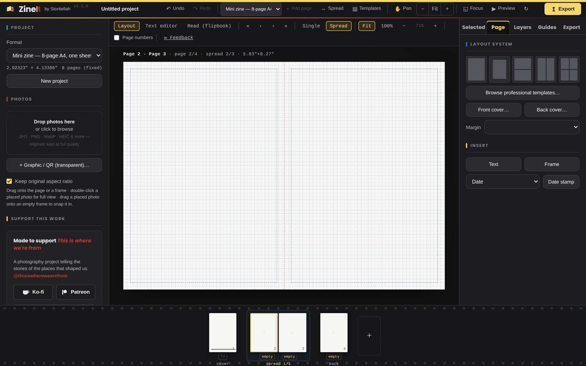
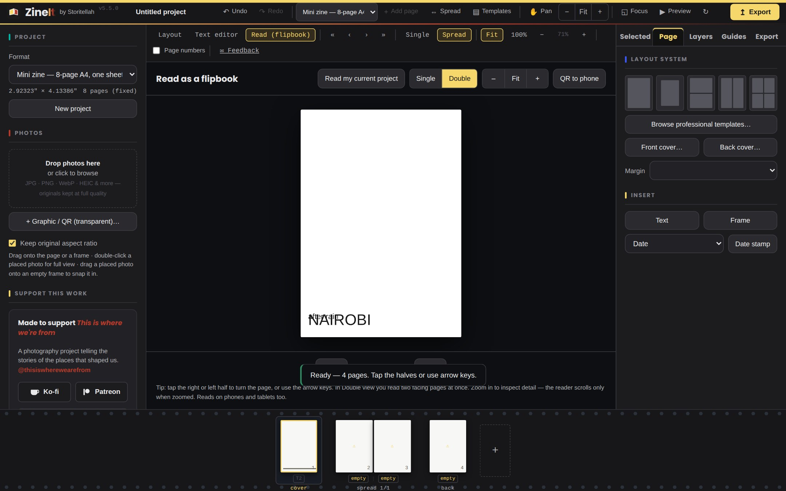
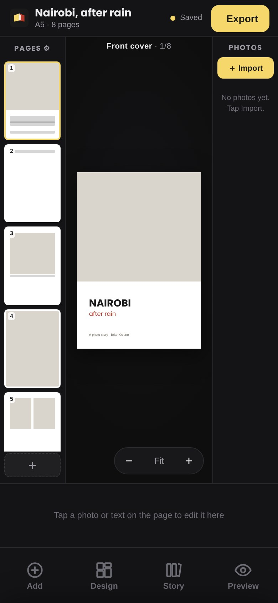

A free, local-first layout tool for photographers and photojournalists. Drop in your photos, arrange them, and export something you can actually print — a folded mini-zine, a saddle-stitched booklet, or a photobook.

Built around how photographers actually work — your originals stay untouched, your photos never leave your device, and every export is ready for the printer.
A4 mini-zines, photobooks and saddle-stitched booklets, with fold and cut guides that line up.
Frames crop; your pictures always keep their true shape. Every crop is reversible.
Export a 300 DPI, print-ready mini-zine, named after your project. No print-dialog dance.
Run one photo across a spread, several pages, or the whole cover — gutter-aware, never distorted.
Drop in logos, QR codes and signatures with real transparency — no white box, ever.
Works from a single file, on a plane, forever. Backs up to a small file you keep.

The flipbook reader turns your layout into facing pages you can page through — so you catch what the flat editor hides.
The whole tool works in mobile browsers — Chrome, Safari, Brave — with a layout that adapts to phones and tablets without hiding the tools you need.

Go to zineit.app or open the single HTML file. No sign-up.
Drag them in. Originals stay full quality and untouched.
Pick a format, arrange, add text and logos, check the flipbook.
One-click A4 PDF at 300 DPI, named after your project.
ZineIt exports clean 300 DPI, correctly-sized, bleed-ready files. For CMYK with a specific ICC profile (Coated GRACoL 2006 / FOGRA39), it tells you exactly how to convert in a prepress tool — because browsers are RGB-only, and faking it would give you wrong colour.
Crisp in print, from your originals — not the screen.
K100 for sharp text; a rich-black recipe for deep fills.
Toggle 3 mm / 0.125″ bleed when art runs to the edge.